Here's the deal: the world sucks and we are doing our best to hack our way through difficult times. We're in a privileged enough position to be mobile and dodge the worst of Covid fallout. But we're not about to brag about it on social media and shove it down people's throats. So here's our old school travel blog, for those who actually want it.
Thailand
Jump to:
I could make all kinds of arguments about how slow travel in countries less afected by the pandemic is a not entirely irresponsible thing to do in times of Covid. I don't know if they would convince you, they don't really convince me. But I'm over it. We didn't come here for any selfless reasons. We came here because it's just better, cheaper and more comfortable in every way to be here than in Europe or Canada. It is a strange time to be anywhere. But in a lot of ways, travelling during the pandemic is the best it's been in years. From Amsterdam to Koh Phi Phi, places where the endless crowds of visitors had for years been their defining feature are allowed to breathe. If you take the gamble of planning on visiting where you can, you get attractive deals and space to breathe. Last year in Polynesia, we were greeted by empty beaches. This year a lot more people are escaping their own plagued lands, but outside of the Christmas rush, it still feels empty. Wherever we go, we see an abundance of tourist infrastructure with very few tourists. And I'm about to tell you why. In case you wondered, this is what the inside of a Thai ambulance looks like.
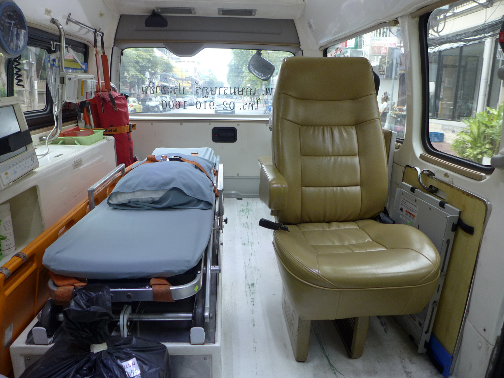
As is the case with many tropical countries, Thai economy relies heavily on tourism. Facing a pressure to reopen despite Covid, the government first introduced a "Sandbox" program in a few beach-side destinations, where international tourists were allowed to arrive and had to stay there without quarantine, provided they were vaccinaded and tested negative for covid both before and after arrival. Before the Omicron spike this system had been temporarily extended to the rest of the country. Currently (and I'm writing this on Jan 6th), new "Thaliand Passes" for the "Test and Go" program are once again only issued for the Phuket "Sandbox." We were lucky to cross the border during the more relaxed period, and we've been meeting many accidental expats who keep getting "Covid extensions" of their visas to make sure they don't have to leave again. Some have been doing this for two years. We also got our first extension on Christmas Eve, but we'll get to that later. To prepare for our Dec 1st arrival, we needed vaccination certificates, booked flights, an approved medical insurance that covers hospital costs in case of Covid, a paid for reservation at hotel approved for quarantine (for 24h until you get your test result... if you're unlucky, you may have to stay for 14 days if someone you're associated with tests positive). Once you get approved for arrival, the hotel will want to receive the passes as well as you negative PCR test before departure. It's all pretty reasonable when you think of it. Until you draw the short straw, that is. I had two negative tests from Poland - one 10 days and one the day before departure. On arrival in Bangkok, with our luggage delayed, we got put in a van that took us to a hospital for our arrival tests, and then to the hotel where we got locked in a room. In the morning, a phone call from the reception, that I tested positive. An ambulance will come to take me to a hospital where I will stay in isolation for 14 days. Brett needs to stay in isolation in the room, which will be billed for 14 days. Do we understand. For about the next hour we were frantically trying to prepare for whatever comes next. We made sure we bothe have access to enough emergency funds, considered all kinds of worst case scenarios. We each took one of our two in-ear translation devices (we never actually manage to use them in a practical way though.) Embraced. Finally, hospital workers came to take me away. Communication was limited, but the nurse did write down the address of the hospital and ward number for Brett and nodded when I asked if there will be an internet connection. This was a relief. Our luggage still hasn't arrived, so here I was heading into a hospital in a foreign country, no spare clothes and only basic toiletries, but with a full set of travel electronics. I was taken to a hospital room that was to be my cell for the next 14 days. It was in fact quite comfortable, with a bathroom, fridge, kettle, tea and instant coffee and an internet connection. Beautiful city view. Food was left outside my door and was eadible, but I had no apetite and I wasn't sure how much of I would be getting, so I was stretching it. A nurse came in with consent forms in Thai, and prepared to take a blood sample. I was trying to be polite but I couldn't feasibly sign forms I didn't understand. We communicated through google translate with polite giggling and awkwardness on both sides. She asked if she can add her colleague who speaks English to my messenger contacts. The colleague, through her cartoon profile picture, would be my virtual point of contact from then on. I was given consent forms in English, a blood test, and a chest X-ray. Then a phone call from a doctor. every person I intercted with asked me about symptoms. No symptoms. Negative test before departure. Can I please get another test. This could be a false positive. Finally, I was promised a Covid test in the morning. It was a rough night, filled with anxiety. But, I would tell myself, it was still beter than being in Poland. The time zones worked in my favor and I could reach out to two friends in North America well into the wee hours of the morning (you know who you are. life savers.)
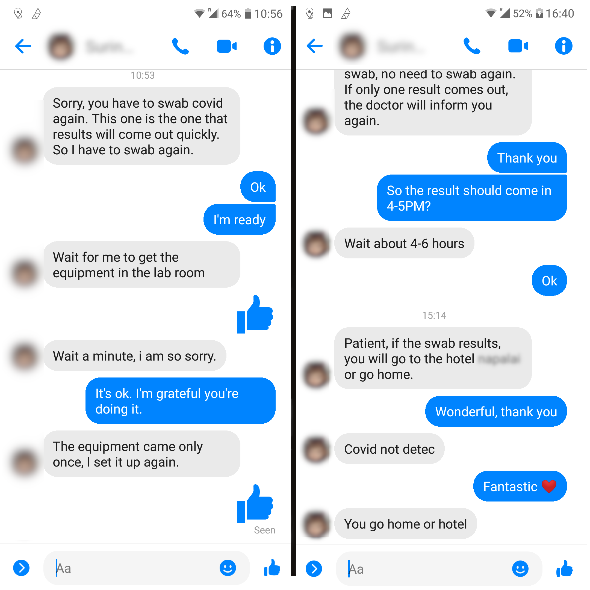
Around 10AM I got the promised test. In the afternoon results came in - negative. I got first signals that we might both get released. The rest of the day was a jumble of conflicting information, it seemed as if I would be released to the hotel but we might still have to quarantine there and in separate rooms. Finally, after I convinced the hospital staff to intervene wit the hotel it was confirmed that we would both be fully released. I'm convinced that this was at the discretion of the doctor and we have him to thank for our next 2 weeks of freedom. We spent one final night at the hotel, but this time we could leave the room - which I tested by going to a cash machine. Incidentally, the medical insurance came in very handy - the hospital, unsurprisingly, turned out to be an expensive private hospital that is contracted to handle arrivals. I imagine a public hospital wouldn't waste a hospital room on asymptomatic foreigners. The next 3 days in the Khao San area were... strange. It's mostly shuttered, struggling, and filled with anxiety. Of course, Covid plays a role, and so does the ever-tightening grip of corporations, and the fact that Thailand has since gotten more authoritarian, but I found none of the wild spirit I remember from a decade ago. Perhaps I'm the one who's even more changed - back then my expectations of SE Asia were laughably naive, and our merry group of friends got up to crazy shenanigans that we would be embarassed at today. I doubt I would be able to experience Bangkok now as I did then. Stepping twice into same rivers and all that. Pirates of the Cam, I miss you. Say hi to the kids.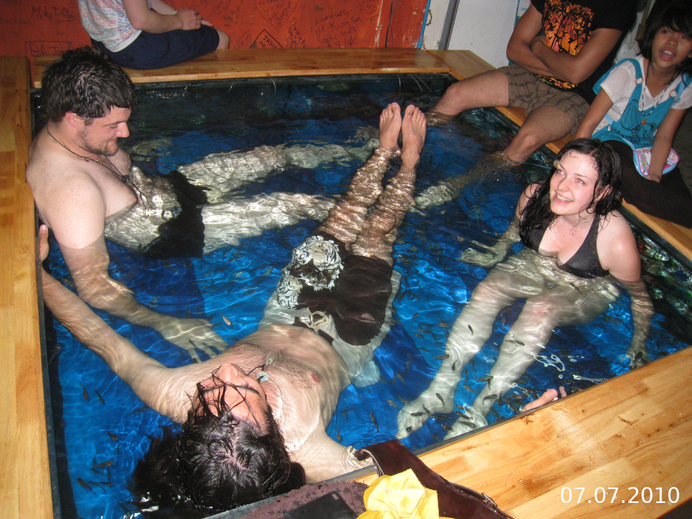
Koh Phangan 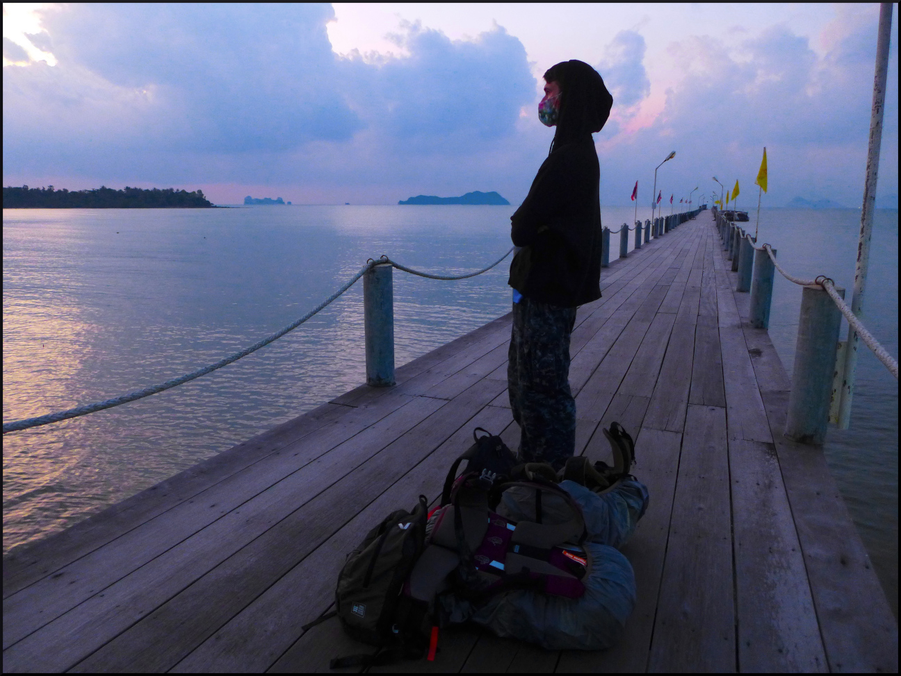 We decided to ho to Koh Phangan, without the expectation of anything resembling a Full Moon Party - mostly based on the fact that we found a beachside bungalow that had all the comforts at a very attractive price (SeaEsta Beach - absolutely amazing, perfect spot) and because the island has a bohemian reputation and we expected to see a backpacker crowd rather than resort people. We were correct on both counts, and there was even a somewhat sad, deflated but still fratty Full Moon Party. Or maybe FMPs were always kinda sad and we are simply not the target audience? The music was really shitty and the people (and there was a surprising number of them) we mostly drunk bros pissing into the ocean. There were the famous "fucking strong buckets" of cheap booze and many simultanous fire spinning shows (I really miss fire spinning. Yet another nostalgia trip. Where are you, Cam friends?). The highlight was a burning jumping rope that drunk bros would entusiastically attempt. Bros yelling with excitement about getting burned were certainly the highlight of our night. Naturally, it was all subdued compared to the FMPs of old. No mountain with magic mushroom cocktails, as far as we could tell. The island appeared to be frozen in time. There are posters for events in 2019 and 2020, shuttered hotels and, like anywhere during Covid, a certain urgency in getting the few tourists that there are to extend their patronage to your establishment. We enjoyed ourselves very much though.
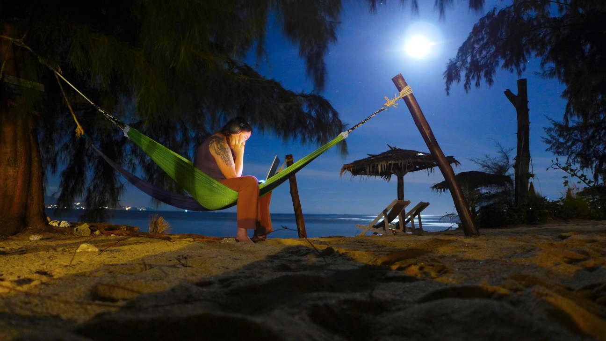

We were ready to extend our stay to an additional 30 days, and decided to go about it early. The immigration office in Koh Phangan however, could only process two applicants an hour, and therefore would only accept your papers if this was the last day you could apply. We decided to go to the bigger Koh Samui to get processed. It was a lot more, well, resorty... completely built over with hotels so dense they felt stacked on top of one another. And kinda boring. But we did get our paperwork done, saw Spiderman in the Samui cineplex and an epic fireshow (much better than the Phangan ones) before jetting off to Phuket and immediately getting on the boat to Phi Phi (never get stuck in Phuket. It sucks.)
Phi Phi and Lanta "Let's get three lines! Like in the movie!" - a girl's voice as we were passing a tattoo shop in Phi Phi Yes, well, Koh Phi Phi is the island from The Beach, a cult Danny Boyle movie that starred Leonardo DiCaprio at the time when he was the hottest thing in the world. (I should know, I was a teenage girl.) And so for nearly two decades 5,000 visitors a day had flooded onto the beautiful, formerly untouched Maya Beach off the coast. In 2018 the beach was closed in an effort to let it recover, and now it is about to be open again. In any case, Phi Phi is typically a very crowded island. Even now, despite covid, it looked like what elsewhere might pass as high season. We stopped here because these are the only frequent ferries out of Phuket, unsure if we'll want to stay more than one night. It turned out to be a good time. Unsurprisingly, the highlight of the stay turned out to be a boat tour around Phi Phi Ley - the uninhabited smaller sister of Phi Phi Don, that has most of the natural treasures, including the Maya beach.
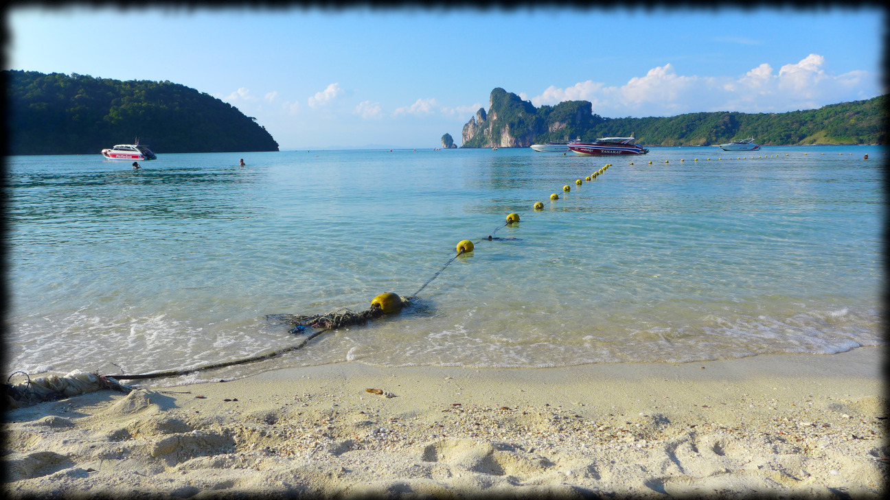
....
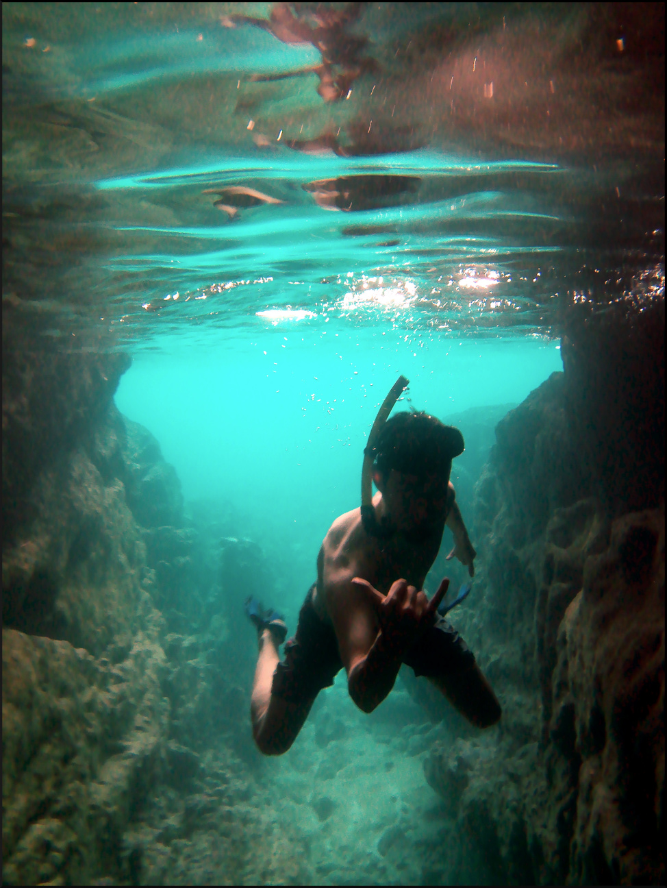
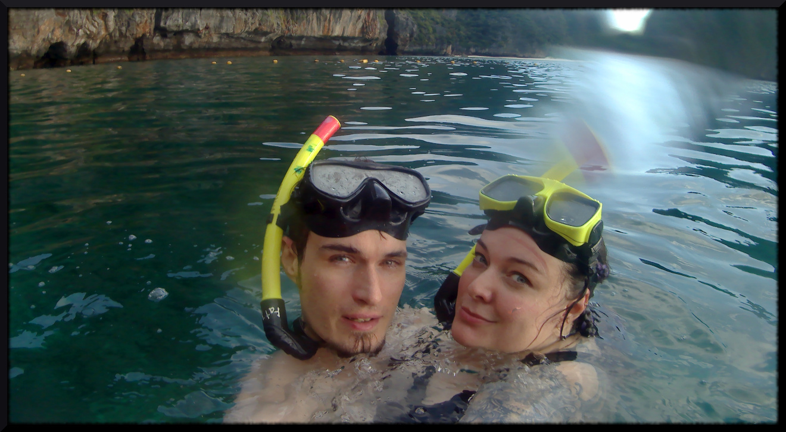
After a few days in Phi Phi, facing a spike in accomodation costs for NYE we took a ferry to much more spacious and quiet Koh Lanta. We found a lot of cool stuff - like an epic burger place (Kraken Lanta) ran by an expat from Kraków. Incidentally, the absolutely fantastic spot we stayed in on Phangan was also ran by to girls from Poland. Funny how Polish people do great the moment they freaking LEAVE. ;) We welcomed 2022 on the beach, with fireworks and luminescent plankton.
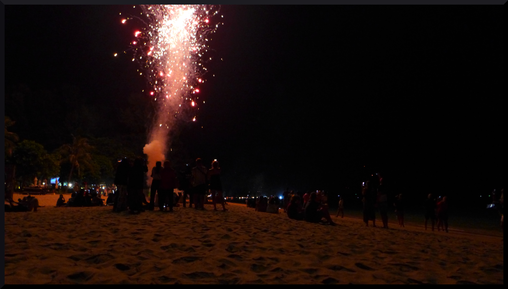
Chiang Mai
Chiang Mai is honestly the best. It's more liveable in every way than Bangkok, and has the best guesthouses and street food. But most importantly, on the way over we met Yugo, an expat filmmaker with some great work under his belt and getting to know the city though his eyes has been pretty epic. Chiang Mai has a vibrant art and student communities, tech people working from coffee shops, political protesters - you name it. It feels very alive and layered and we could stay here forever.
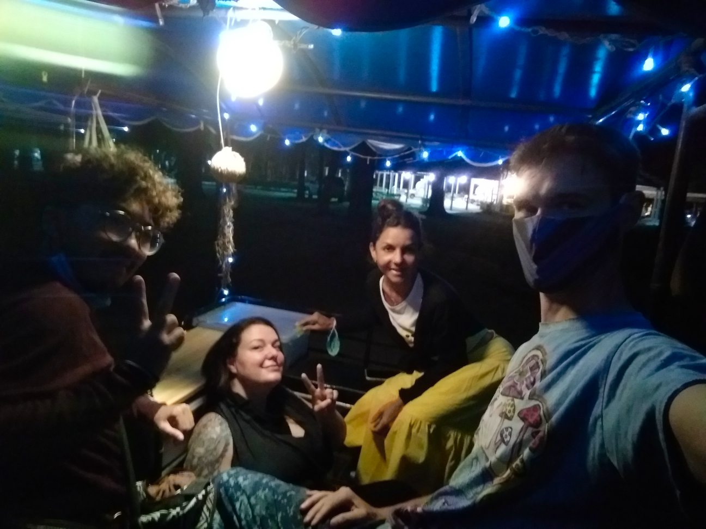
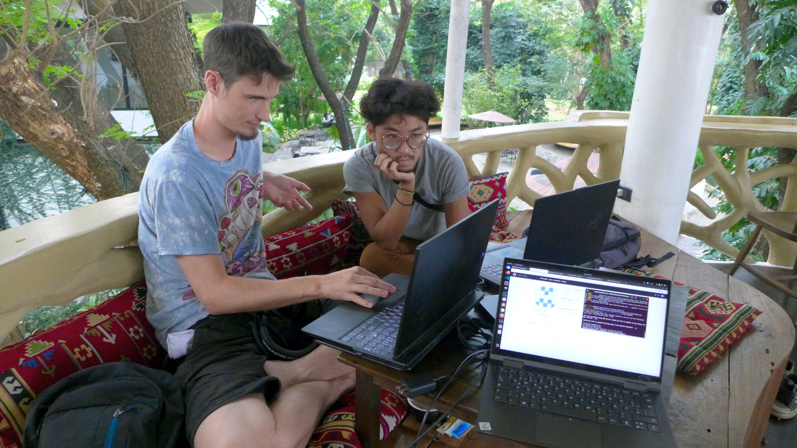
We barely scratched the surface of cool things tourists may want to do in Chiang Mai. There are many elephant sanctuaries where you can go to feed and bathe these wonderful beasts (the elephant parks that offer riding are thankfully being phased out.) There are plenty of montains that are great for hiking, and the most temples in all of Thailand - many of them are quite unique and beautiful. There is even a place where you can pay relatively a lot of money to hug tigers for a few minutes.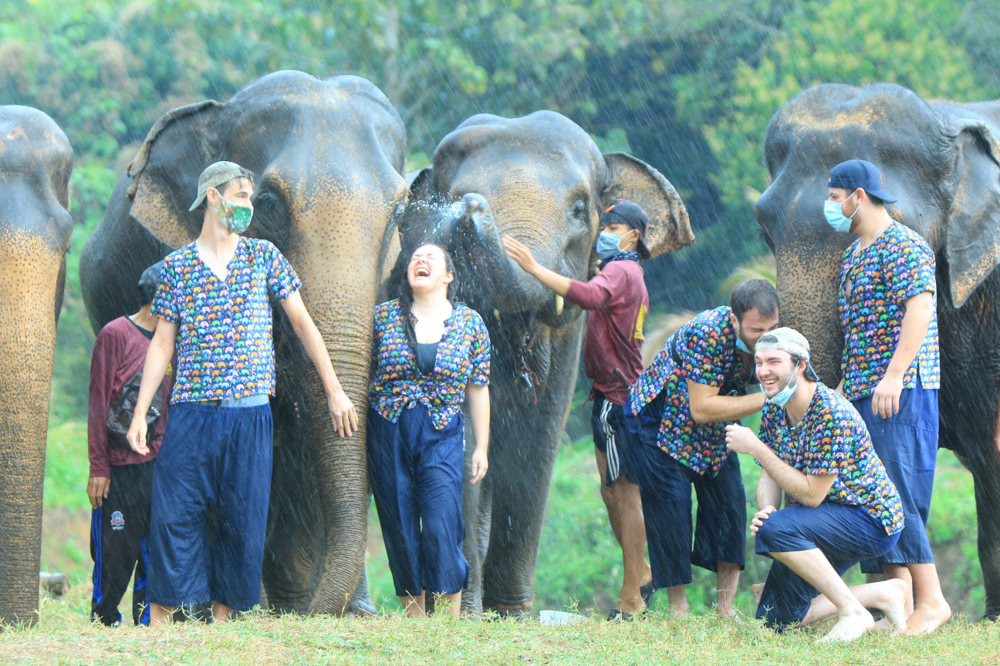
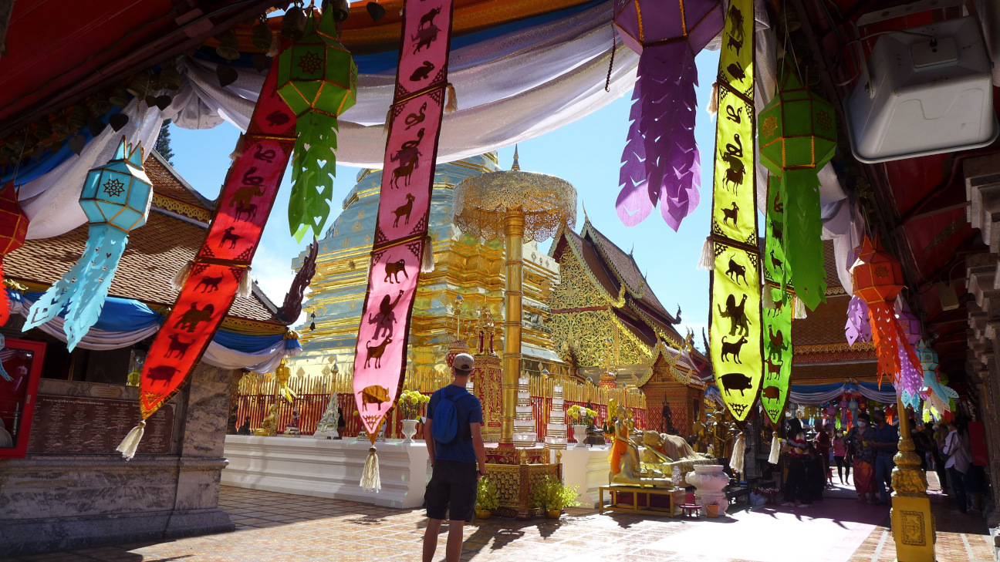
The cherry blossoms were in season when we hiked Doi Suthep. 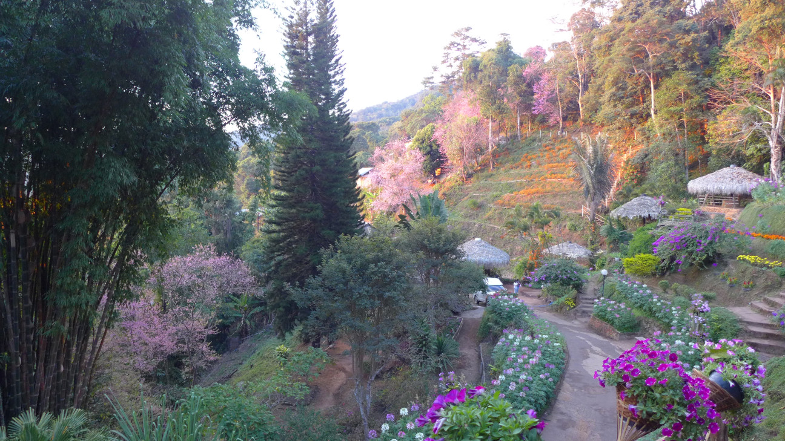
Pai